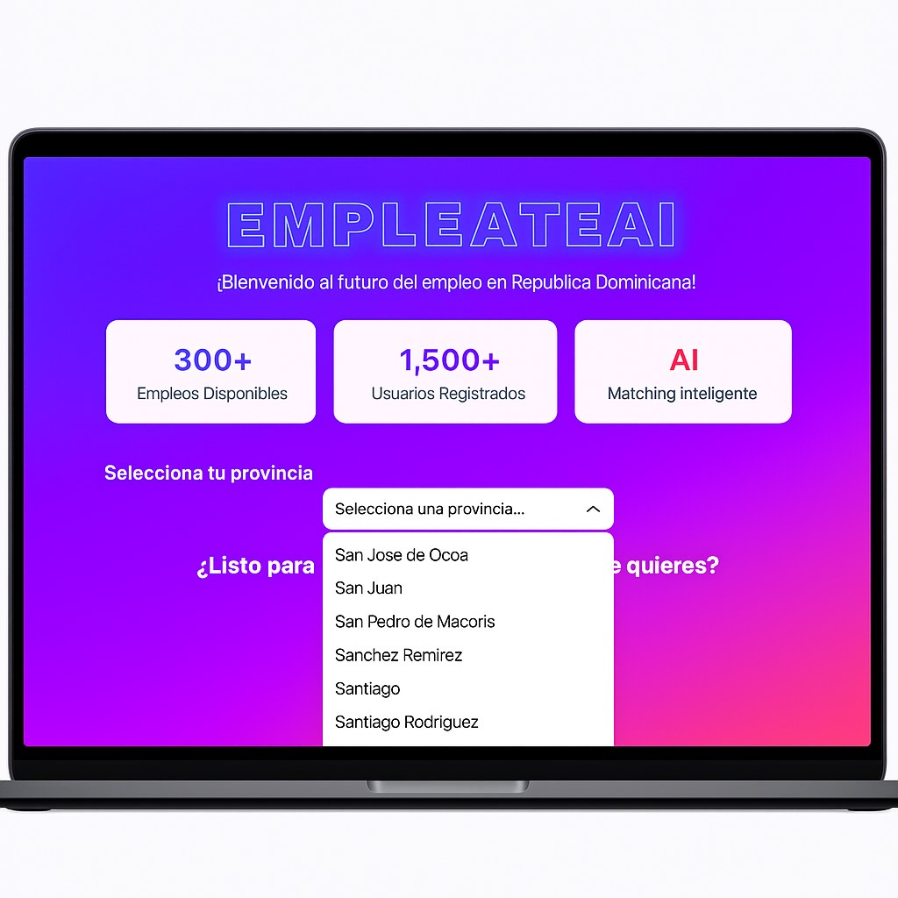

Santo Domingo, R.D. — En un momento histórico para la innovación educativa y tecnológica del país, un grupo de estudiantes del curso “Secretariado Ejecutivo e Inteligencia Artificial” impartido por el Instituto Social de Tecnificación Moderna (ISTEM), ha dado vida a un proyecto que promete transformar la manera en que los dominicanos buscan y encuentran empleo: EMPLEATEAI.
EMPLEATEAI no es solo una idea de aula. Es el fruto de estudios, lluvia de ideas, ensayos y finalmente la decisión de poner manos a la obra. Su creación marcó un antes y un después en la forma en que los estudiantes del ISTEM comprenden el poder de la inteligencia artificial aplicada a la vida real. Nació como una asignación de clase, pero se transformó en una misión de impacto nacional.
“El propósito era claro: eliminar barreras, reducir gastos innecesarios y darle el poder de elegir a los jóvenes y profesionales dominicanos. Con EMPLEATEAI, un estudiante desde cualquier provincia puede acceder a oportunidades laborales reales sin tener que recorrer oficinas o gastar en transporte,” explica uno de los coordinadores académicos del ISTEM.
A diferencia de los portales tradicionales, EMPLEATEAI no solo publica vacantes: las interpreta. Usa modelos de lenguaje y scraping avanzado para recoger vacantes públicas y privadas, leerlas, analizarlas y compararlas con los perfiles de cada usuario. El resultado: sugerencias personalizadas y automáticas.
Con geolocalización inteligente, analiza la ubicación del usuario para optimizar las ofertas. ¿Vives en Ocoa? El sistema te muestra vacantes relevantes cerca de ti. ¿Dispones para trabajar remoto? Se adapta. ¿No tienes experiencia? Te guía paso a paso para mejorar tu perfil con microcursos, plantillas de CV y más.
“Deja de perseguir cualquier empleo; aquí vas por el empleo que realmente te conviene”, dicen sus creadores. Y no es solo un eslogan: es un algoritmo que prioriza la calidad sobre la cantidad.
Este proyecto demuestra que la inteligencia artificial no es exclusiva de grandes empresas extranjeras. La IA puede nacer en un aula dominicana. Y eso fue exactamente lo que hicieron los estudiantes del ISTEM. Ellos diseñaron, programaron, testearon y ajustaron la plataforma desde cero, utilizando herramientas modernas como Python, React y OpenAI para el motor de análisis.
Además, lo hicieron con una mirada ética, humana y local. El sistema promueve la inclusión, prioriza a mujeres madres, jóvenes rurales y personas en condiciones de vulnerabilidad laboral. Porque ser digital no significa olvidar el corazón de nuestra gente.
EMPLEATEAI se conecta con más de 32 provincias dominicanas. Cuenta con alianzas estratégicas con empresas locales y ONGs. Las vacantes que se publican son revisadas, y el sistema puede alertar al usuario si una oferta luce sospechosa o fraudulenta.
El acceso a la plataforma es gratuito y abierto, y no requiere más que un celular con internet básico. “Queremos que la brecha digital no se convierta en una brecha laboral,” expresaron los desarrolladores en la presentación interna del proyecto.
Empresas ahora tienen acceso a un banco de talento que no solo tiene CVs, sino que puede hacer ‘match’ con lo que necesitan en tiempo real. El proceso de contratación se acorta y se hace más eficiente.
Los estudiantes ya preparan la segunda fase del sistema: entrevistas automatizadas por IA, generación de cartas de presentación con modelos GPT personalizados, y un sistema de puntuación ética que permitirá a los usuarios destacar por su honestidad, esfuerzo y coherencia profesional.
El ISTEM, por su parte, se ha comprometido a replicar esta experiencia con nuevos cursos y carreras técnicas. Este es un modelo que puede cambiar la forma en que se enseña, se innova y se resuelve en la educación dominicana.
EMPLEATEAI no solo conecta vacantes. Conecta talentos, sueños, y posibilidades. El empleo del futuro ya no se busca con papeles y caminando al sol. Se construye, se automatiza, se dignifica. Y lo mejor: se hace en casa, con mentes dominicanas.
Los estudiantes aprovecharon para agradecer al director de la Escuela Luisa Ozema Pellerano, Lic. Marcio Melvin Mateo; por su coolaboración en dicho proyecto.
← Volver a la página principal